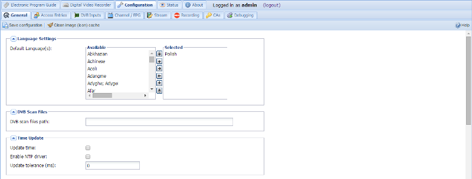
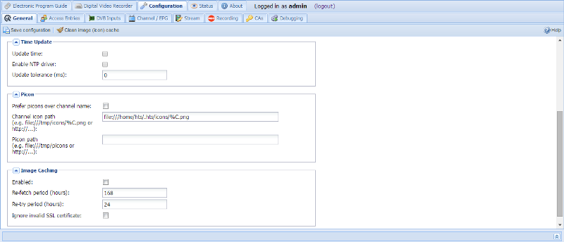

Configuration - General
EDITOR’S NOTE: THIS SOURCE SHOULD BE RENAMED CONFIG_GENERAL.MD WITH CORRESPONDING CHANGE IN TVH WEBUI JS.
This tabs allow configuration of several general parameters that affect the core TVH functionality.
EDITOR’S NOTE: THE TWO IMAGES BELOW SHOULD BE REPLACED WITH A SINGLE ONE.


Buttons
The buttons have the following functions:
Language Settings
Default Language(s) : Select the list of languages (in order of priority) to be used for supplying EPG information to clients that don’t provide their own configuration.
The EPG information is NOT translated, this only applies to EPG providers that give information (titles, descriptions, etc..) in multiple languages.
DVB Scan Files Path
DVB scan files path : Select the path to use for DVB scan configuration files. Typically dvb-apps stores these in /usr/share/dvb/. Leave blank to use TVH’s internal file set.
Time Update
Tvheadend has a built-in capability to update the system time. However, you should bear in mind that DVB time is not highly accurate and is prone to both jitter and variation between different transponders.
Where possible, it’s probably still better to use an internet based NTP source to synchronise the system clock (i.e. through the underlying operating system).
Update time : Enable system time updates. This will only work if the user running TVH has rights to update the system clock (normally only root).
Enable NTP driver : This will create an NTP driver (using shmem interface) that you can feed into ntpd. This can be run without root priviledges, but generally the performance is not that great.
Update tolerance (milliseconds) : Only update the system clock (doesn’t affect NTP driver) if the delta between the system clock and DVB time is greater than this. This can help stop excessive oscillations on the system clock.
Picons
Picons (from personal icons) are collections of similar icons that can be automatically matched against your channels based on a number of technical parameters that will uniquely define a channel. The use of these parameters (e.g. mux, frequency, orbital position) removes the ambiguity of using names - it’s not case sensitive, it doesn’t care if there are spaces or not, and so on. You can generate picons yourself from existing images, or you can usually find sets pre-made on the Internet if you search for them. They’re a good way to get large numbers of icons matched quickly, and usually in a similar style (such as square, x * y pixels, with a consistent highlight/reflection effect).
Prefer picons over channel name : If both a picon and a channel-specific (e.g. channelname.jpg) icon are defined, use the picon.
Channel icon path : Path to an icon for this channel. This can be named however you wish, as a local (file://) or remote (http://) image. The following placeholders are available:
| Placeholder | Function |
|---|---|
| %C | the transliterated channel name in ASCII (safe characters, no spaces etc.) |
| %c | the channel name (URL encoded ASCII) |
Example: file:///tmp/icons/%C.png or http://example.com/%c.png
Picon path
: Path to a directory (folder) containing your picon collection. This
can be named however you wish, as a local (file://) or remote
(http://) location - however, remember that it’s pointing to a
directory as the picon names are automatically generated from the
service parameters frequency, orbital position, etc.).
Example: file:///home/hts/picons
SAT>IP Server
SAT>IP Server is something like DVB network tuner. TVHeadend can forward mpegts input streams including on-the-fly descramling to SAT>IP clients.
Only networks with the “SAT>IP Source” field set are exported through the SAT>IP protocol. This field is matched through the “src” parameter asked from the SAT>IP client. Usually (and by default) this value is 1. For satellite tuners, this value determines the satellite source (dish). By specification position 1 = DiseqC AA, 2 = DiseqC AB, 3 = DiseqC BA, 4 = DiseqC BB, but any numbers may be used - depends on the SAT>IP client. Note that if you use a similar number for multiple networks, the first matched network containing the mux with requested parameters will win (also for unknown mux).
RTSP Port : Select RTSP port (TCP) for realtime commands from SAT>IP clients. Usually (as defined in the specification) this port is 554. But as extension, TVHeadend can use any TCP port value (which is default 9983 for non-root users). But the SAT>IP client must allow to set this value (TVHeadend client will obtain the RTSP port number automatically using the XML description). If the RTSP port value is zero, the SAT>IP server functionality is not enabled.
Subscription Weight : Subscription weight value. Default value is 100 (standard streaming). Note that the default value for DVR is 300 (normal priority).
Descramble Services : The maximum limit of services descrambled per a mux. If zero, the descrambling functionality is disabled.
Muxes Handling : When SAT>IP client requests new mux configuration, tvheadend can handle it in three ways. The auto (0) configuration means that if the mux does not exists, a temporary mux is created and removed when the client closes the connection. The keep (1) configuration will remember all successfuly scanned muxes. The reject (2) configuration will reject unknown muxes.
Exported .... Tuners : Each option lists the tuners, by type, you wish to present over IP to other clients.
Image Caching
This will cache any channel icons or other images (such as EPG metadata) to be served from the local webserver. This can be useful for multi-client systems and, generally, to reduce hits on upstream providers.
Enabled : Select whether or not to enable caching. Note: even with this disabled you can still specify local (file://) icons and these will be served by the built-in webserver.
Re-fetch period (hours) : How frequently the upstream provider is checked for changes.
Re-try period (hours) : How frequently it will re-try fetching an image that has failed to be fetched.
Ignore invalid SSL certificates : Ignore invalid/unverifiable (expired, self-certified, etc.) certificates